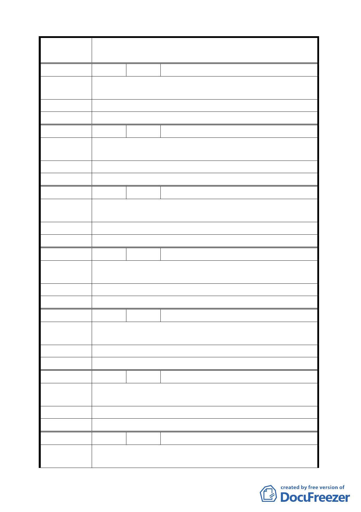

案
名
變更臺北市士林區至善段五小段 80、81、117 地號等加油站
用地為公園用地細部計畫案
編 號 9 陳情人 劉健在
陳 情 理 由 污染環境，影響交通。
建 議 辦 法 作公園綠地。
委 員 會 決 議 同編號 6。
編 號 10 陳情人 洪秀花
陳 情 理 由 加油站設在轉彎口處易引起車禍。
建 議 辦 法 請改為公園用地。
委 員 會 決 議 同編號 6。
編 號 11 陳情人 張子松
陳 情 理 由 本區為觀光旅遊區，建議應該以綠地、遊樂設施為主。
建 議 辦 法 公園、綠地、腳踏車公園。
委 員 會 決 議 同編號 2。
編 號 12 陳情人 黃榮光
陳 情 理 由 設加油站是不定時炸彈，危及故宮。作公園提升觀光品質。
建 議 辦 法 請變更為公園用地。
委 員 會 決 議 同編號 6。
編 號 13 陳情人 韓溫榮花
陳 情 理 由 安全理由、住戶安全。危害故宮古物。
建 議 辦 法 公園綠地。
委 員 會 決 議 同編號 6。
編 號 14 陳情人 尚人清
陳 情 理 由 加油站危及故宮，污染環境。
建 議 辦 法 請作為公園綠地，提升生活品質。
委 員 會 決 議 同編號 6。
編 號 15 陳情人 黃湘晴
陳 情 理 由 此區鄰近已有 4 個加油站，緊鄰自強隧道北安路口加油站 1
40